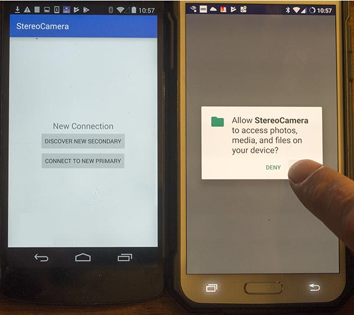
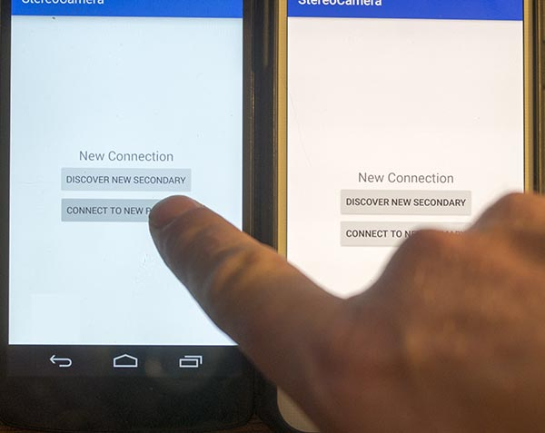
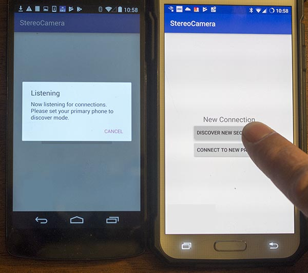
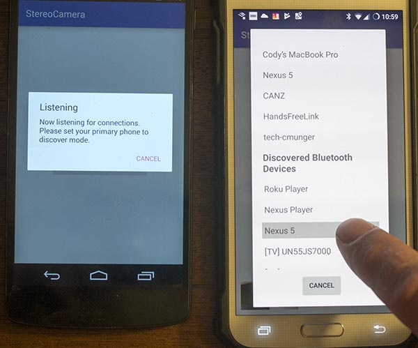
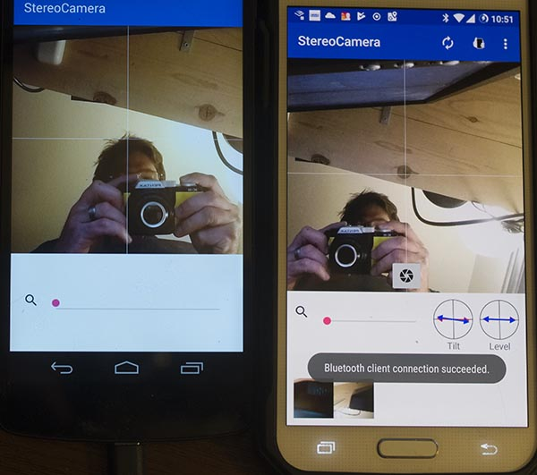

Connecting
The first thing to know is This is a separate program that runs on separate devices. While
The devices do talk to each other there are notable things they can't do that could frustrate the
end user experience. One device can't start up the other device. One device can't start the program
on the other device. The devices can't talk to each other until you initiate the connection yourself.
This means you will be operating two separate phones at the same time. They can't be treated as
a single device.
StereoCamera uses Bluetooth to connect the two devices. One must be specified as a primary and the
other as a secondary. The primary does the bulk of the work so it's best to
desigate the better/newer device as a primary. To start, accept any permissions notifications that are
prompted.

When prompted with the new connection buttons choose "Connect to new primary" on your secondary device.
You'll be prompted to enable Bluetooth discovery so tap yes.

... and "Discover new secondary" on your primary device.

A list of possible Bluetooth connections should show up. The name of your new secondary might
not show up for a few seconds.
Tap the secondary name.

You should be good to go! You'll know which is the primary device because of all the extra controls.
It's pictured on the right side of the image below.
